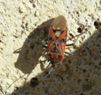
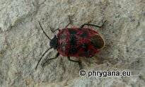
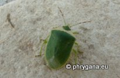
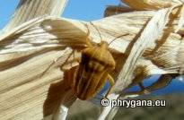
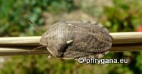

")
| PHRYGANA | Fauna | Flora | Galles | liste des espèces |
contact -
info - commentaires phrygana1 (at) gmail.com |
| Particularités crétoises | nouveautés | Mines | ressources naturelles |
| les Heteroptera de Crète |
|
| Lygaeidae |
| En Crète, la famille des Lygaeidae compte au moins 2 sous-familles: Lygaeinae et Rhyparochrominae |
| Lygaeinae | ||||
| En Crète, la sous-famille des Lygaeinae compte au moins 3 espèces et 2 genres: Lygaeus Fabricius 1794, Spilostethus St?Ι 1868 | ||||
|
|
|
 | ||
| Lygaeus creticus | Lygaeus equestris | Spilostethus pandurus | ||
| Rhyparochrominae | ||||
| En Crète, la sous-famille des Rhyparochrominae compte au moins 2 espèces et 2 genres (Ischnopeza Fieber 1860 et Xanthochilus St?Ι 1872 | ||||
|
|
||||
| Xanthochilus saturnius | ||||
| Pentatomidae |
| En Crète, la famille des Pentatomidae compte au moins 2 sous-familles: Pentatominae et Podopinae |
| Pentatominae | ||||
| En Crète, la sous-famille des Pentatominae compte au moins 9 espèces et 8 genres: | ||||
| Acrosternum Fieber 1860, Carpocoris Kolenati 1846, Codophila Mulsant & Rey 1866, Chroantha St?Ι 1872, Eurydema Laporte 1833, Sciocoris Fallen 1829, Nezara Amyot & Serville 1843, Piezodorus Fiber 1861 | ||||
 |
 fuscispinus (Boheman 1850)") |
 |
") |
|
| Acrosternum heegeri | Carpocoris fuscispinus | Chroantha ornatula | Codophila varia | |
|  |
 ventralis Kolenati 1846") |
 |
") |
|
| Eurydema ornata | Eurydema ventralis | Nezara viridula | Piezodorus lituratus | |
| Podopinae | ||||
| En Crète, la sous-famille des Podopinae compte au moins 3 espèces et 2 genres (Graphosoma Laporte 1833 -- Tholagmus St?I 1860) | ||||
 |
 | |||
| Graphosoma lineatum | Graphosoma semipunctatum | Tholagmus flavolineatus | ||
| Miridae | ||||
| En Crète, la famille des Miridae compte au moins 60 (sous)espèces en 31 genres | ||||
 infuscatus (Brulle 1832)") |
||||
| Horistus infuscatus | ||||
| Rhopalidae | ||||
") |
||||
| Corizus hyoscyami | ||||
| Alydidae | ||||
") |
||||
| Camptopus lateralis | ||||
| Scutelleridae | ||||
| En Crète, la famille des Scutelleridae compte au moins 2 espèces et 2 genres (Eurygaster Laporte 1833, Odontotarsus Laporte 1833) | ||||
|  |
 |
|||
| Eurygaster maura | Odontotarsus robustus | |||
| Reduviidae | ||||
| En Crète, la famille des Reduviidae compte au moins 2 espèces et 2 genres (Rhynocoris Hahn 1833 - Reduvius Fabricius 1775) | ||||
 |
 punctiventris (Herrich- Schaeffer 1846)") |
|||
| Reduvius pallipes | Rhynocoris punctiventris | |||
| 07 octobre 2012 |
| © paul fontaine -- © Phrygana.eu 2007 -- 2013 |